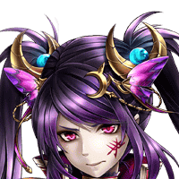

あ、あれ……？ 人って、死んだら消えるもんでしたっけ？
アリス
ほら、あなたも感じるはずよ。 魔力の気配が、周囲に残ったままだって。
ロネッサ
でも、どういうことですか？ さっきのシード様は、何だったんです？
アリス
英雄と名前が同じだけの別人とは、 もうあなたも思っていないようね。
ロネッサ
あ、あの！ アリスに訊きますけど、 アリスの目にはどう見えました？
ロネッサ
うー、だったらなおさら謎ですよ。 私、何度だって言いますけどっ！
ロネッサ
私はシード様の生まれ変わりと 同じ時間を過ごしてきたんですっ！
ロネッサ
シード様が生まれ変わっている以上、 その亡霊が存在できるわけないんです！
アリス
あなたとしては、 そこの理屈があくまで拠り所なわけね。
アリス
けど、もしかするとあなたがこの世界に来て いる事と、何か関係があるのかも……。
ロネッサ
アリス、この先の研究所跡を調べる必要が あるかもです！
変ね、何処にも見当たらないわ。 さっきまで、あの子の声がしていたのに。
アーサー
ここを見てくれ。 ほら、誰かが戦った痕跡がある。
アーサー
それに辺り一帯、何かすごい力を感じる…。
エルザ
どうなっているの……？ これも、シードの仕業なの？
エルザ
ええ……。バリウラ帝国の第六皇女。 私の、腹違いの妹よ。
お久しぶりね、エルザお姉様。 まさかあなたまでいらしてるだなんて。
第六皇女
もちろん、アリスを監視するためよ。 お父様の命でね。


エルザ
っ……！
エルザ
わざわざあなたに監視させたということは、 お父様には何か企みがあるの？
第六皇女
なんてね、お姉様には特別に教えてあげる。 お父様もそれをお望みでしょうし。
第六皇女
あの子は最近、感情を取り戻しつつあるの。
第六皇女
そう。ではお優しいエルザお姉様、 そんなアリスに何が起きると思う？
第六皇女
暗殺者として、兵器として…… あの子は欠陥品になってしまうということよ
第六皇女
だから、より不安定になって暴走する前に、 お父様はあの子を幽閉するおつもりなの。
第六皇女
あえて遂行不可能な任務を与え、 失敗させる。その罪を口実にね。
第六皇女
シードは、魂だけの存在なのよ。 絶対に遺体の回収はできない。
アーサー
待ってくれ。魂だけの存在というのは、 どういうことなんだ？
第六皇女
様々な異世界から死人を召喚し、 その魂を兵士として利用する。
第六皇女
かつてこの地では、そんな人道から外れた 魔術の研究が行われていたのよ。
第六皇女
召喚した魂が、すべて暴走し…… その結果として、この地は滅びたの。
第六皇女
最近になってお父様が目をつけて、 調査部隊を送り込んだけど、結果は同じ。
第六皇女
その時に召喚された異世界の英雄は、 今も暴走を続けているわ。
第六皇女
止めるには、研究所跡にある魔具を 破壊するしかない。
第六皇女
言ったでしょ？ お父様も、きっとそれを望むはずだって。
第六皇女
あなたたちは、お父様のお気に入りなのよ。 娘としてではなく、兵器としてだけどね。
第六皇女
そして、あなたたちは２人とも、 苦しむほどに強くなる。
第六皇女
苦しみを克服しようとすればするほど、 魂も肉体もより一層に磨かれる。
エルザ
くっ……。 あなたは、そこまで見越して……！
アーサー
よすんだ、エルザ！ 今はそんなことをしている場合じゃない！
アーサー
早くアリスの後を追おう！ きっと、遺跡の中へ向かったはずだ！
第六皇女
さーて、どうなるかなー？ ロネッサ、無事に帰れるといいんだけど。


{kind=link}
{kind=link}
{kind=link}
{kind=link}
{kind=link}